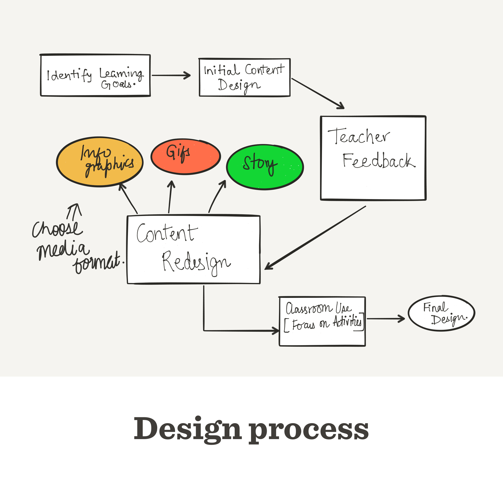
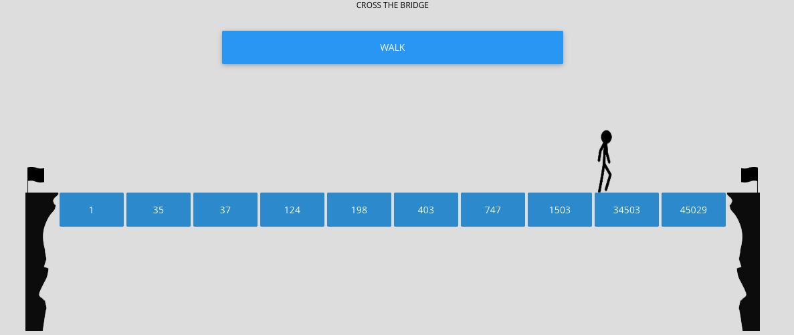
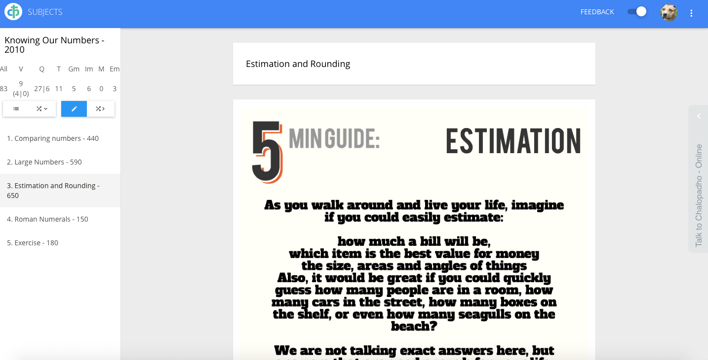
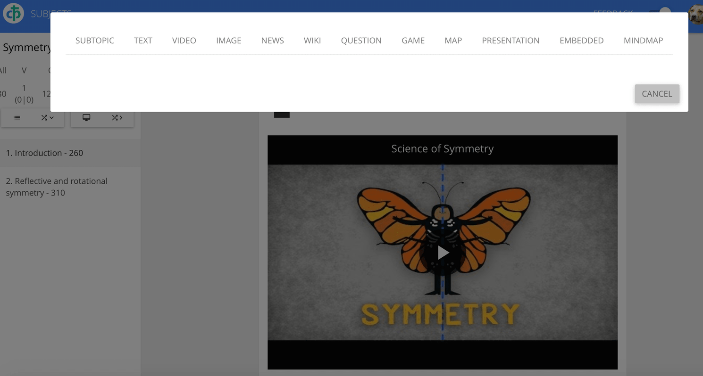

Design Strategy at Chalopadho
I, along with my fellow groups at Chalopadho designed software to be used at Shiv Nadar School in Delhi. We worked on redesigning the whole content strategy of our product and in the end, came up with a product which was meeting needs and wants of our users - teachers and kids.
I led the user experience design of the application — the place where kids can learn online and play games which resulted in connected and engaging learning.
Challenge
Chalopadho, a startup that provides learning content and analytics to children and teachers in the form of a unique learning management system. It needed to rapidly expand its product capabilities. When I joined Chalopadho as Learning Experience Designer, there wasn’t quite enough design process or collaboration between different teams such as frontend developers, subject researchers and designers. I needed to glue them all together. The business metrics that we used to evaluate this product were - Engagement (in teacher dashboard) and Performance of the students.
My Role and Process
On a small team of content developers and designers, I served a few roles - Gamified the Work process inside out: This was the core idea of the product. I pushed this idea in our work environment. There were bonus points for doing sketching and collaborative work. Inside the work, our content got gamified too. This lead to a surprising increase in children engagement and performance.Some of the feedback from teachers and students from the past design were:
Connection
"It is just bookish content. I can't connect to my life.[Student]"
Flexibility is missing
"I want to be able to add and give some feedback on the content."[Teacher]
Interactivity
"The content is not interactive"[Student]
This lead us to follow a consistent design process that focussed on our content and user experience as well. I collaborated with the subject researchers and made them part of whole design process. We used online tools like Canva and Infogram to make infographics. We also designed and developed following design strategy which was tailored according to our own needs.
Shifting the focus
Since the focus of our platform was learning and engagement, we encouraged our teachers to do the same. When we asked them to formulate learning goals, they generally gave us "what they are planning to teach". Changing the focus from teaching goals to learning goals was instrumental in our design process. For example, we focussed on how "linear algebra" can be valuable for the learner in their professional and academic life.
Also, we designed our content based on mystery stories. Many of the subject researchers were struggling to come up with their own game ideas. I made them part of a game. For instance, as a daily routine, each one of us had to play a game which is novel. We started playing a game called cryptic hunt on white boards which ultimately realized its true potential in our online platform. Sherlock was another such game which became famous during the brainstorming. Student solved mysteries using mathematical theories.
 Serve as a UX Critical eye
Analyzed prototypes made by web developers and partnered with them to work through features and product concepts. For instance, we came up with segment idea that enabled teachers and subject researchers to add their content which could be text, image, video, game, map (360° view) or a simulation (either embedded or created in p5.js or unity.)
Final Outcome
One important result of my working in Chalopadho was better communication with developers and subject researchers and increased collaboration and ideation. Though I am no longer working here, the culture which we developed there still persists. For the product, the engagement of the children as observed in the administrator dashboard rose to 50%. The performance of the kids, however, did not change significantly.